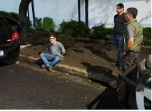
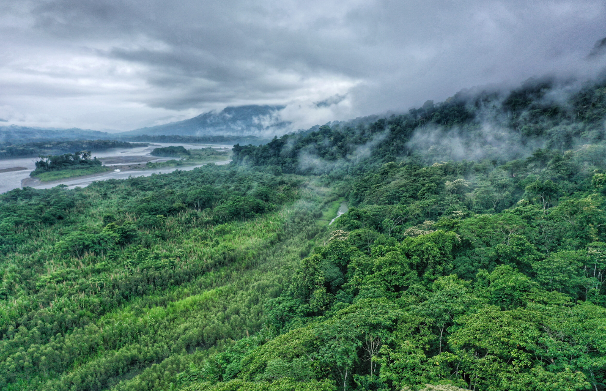
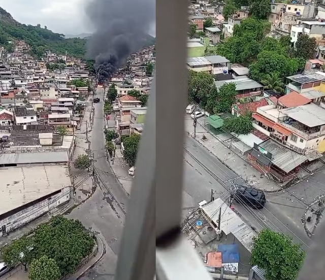
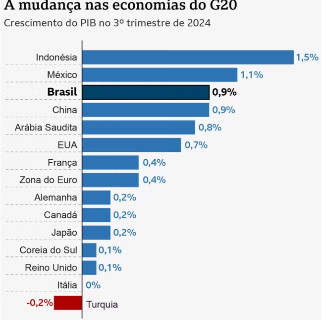

Policial que executou jovem negro pelas costas em SP já foi reprovado em teste psicológico
O policial militar Vinicius de Lima Britto, 24 anos, que matou Gabriel Renan da Silva Soares, 26, com 11 tiros em um mercado Oxxo, já havia sido reprovado em um exame psicológico ao tentar ingressar na Polícia Militar em 2021. A reprovação apontou problemas de sociabilidade e descontrole emocional, mas Britto foi aprovado em um segundo concurso no mesmo ano, após recorrer judicialmente contra o resultado. Em dezembro de 2022, Britto também esteve envolvido em outro caso fatal em São Vicente, onde alegou legítima defesa ao matar dois homens durante uma tentativa de assalto. Após a execução de Gabriel, o policial foi afastado das atividades operacionais, e investigações sobre sua responsabilidade criminal estão em andamento. A SSP-SP informou que, se houver culpabilidade, medidas disciplinares podem ser adotadas, incluindo a exclusão da corporação.
Polícia investiga morte de homem agredido por agentes da ViaMobilidade na estação Carapicuíba, da Linha 8-Diamante
A Polícia Civil investiga a morte de um homem agredido por agentes da ViaMobilidade na estação Carapicuíba, na Linha 8-Diamante, em São Paulo. Imagens mostram o rapaz, aparentemente desorientado, tentando passar pelas catracas, sendo imobilizado com violência por seguranças e agredido por um agente da Guarda Civil Metropolitana à paisana. Após ser arrastado e imobilizado, o homem ficou inconsciente, e os agentes tentaram reanimá-lo até a chegada do SAMU, mas ele morreu no hospital. Inicialmente registrado como morte súbita, o laudo do IML apontou asfixia mecânica como causa da morte. A ViaMobilidade lamentou o ocorrido, afastou os agentes envolvidos e abriu uma sindicância. A Secretaria da Segurança Pública afirmou que novas evidências podem alterar o registro da ocorrência.
Kate Middleton participa de 1ª recepção a chefe de Estado desde diagnóstico de câncer e usa joias da falecida rainhae
Kate Middleton participou de sua primeira recepção a um chefe de Estado desde o diagnóstico de câncer, no dia 3 de dezembro, no Reino Unido. Ela recebeu o emir do Catar, Sheikh Tamim bin Hamad Al Thani, e sua esposa, ao lado do marido, Príncipe William, e do sogro, Rei Charles III, em um almoço no Palácio de Buckingham. Kate usou um casaco bordô e um conjunto de joias que pertenciam à Rainha Elizabeth II, como homenagem à falecida monarca. A saúde de Kate, que havia interrompido suas atividades públicas durante o tratamento de quimioterapia, melhorou, e ela concluiu o tratamento em setembro. Em uma mensagem, a princesa compartilhou o alívio por finalizar a quimioterapia, mas ressaltou que sua recuperação ainda está em andamento.
Tsunami meteorológico: o que é o fenômeno derrubou muros e atingiu casas em Santa Catarina
O tsunami meteorológico que atingiu Jaguaruna, no Sul de Santa Catarina, na madrugada de segunda-feira (2), destruiu uma ponte, derrubou muros, árvores e afetou casas. Esse fenômeno raro ocorre quando ventos fortes, nuvens carregadas e queda repentina da pressão atmosférica se combinam, gerando uma grande onda que chega à praia. Embora o nome remeta ao tsunami causado por terremotos, o tsunami meteorológico é de origem atmosférica e menos destrutivo. O evento é mais comum no Sul do Brasil devido a características geográficas e meteorológicas da região, como ventos fortes e praias abertas. Fenômenos semelhantes ocorreram em Santa Catarina em 2023, 2019 e 2014.
'Pagodão gospel' bota até ateu pra pular e cantor faz sucesso internacional
O cantor gospel Samuel Eleotério, de 25 anos, tem alcançado grande sucesso nas redes sociais com seu estilo musical, o "pagodão gospel", caracterizado por músicas alegres e participativas com influências pentecostais. Seus hits, como "Escuta o Barulho" e "Espada Afiada", têm milhões de visualizações, e seu canal no YouTube está prestes a atingir 28 milhões. Samuel tem se apresentado por todo o Brasil e internacionalmente, realizando 26 shows em 18 cidades de oito estados em novembro. Ele é o filho mais novo de uma família com forte tradição religiosa.

Suspeito de matar porteiro a facadas no meio da rua em Perdizes é preso
O homem suspeito de matar a facadas um porteiro na rua Caraíbas, em Perdizes, foi preso na noite de ontem. Polícia localizou suspeito horas após o crime. Emilio Carlos Swoboda Vigatto mora no prédio em que o porteiro Gabriel Araújo Fonseca trabalhava. Imagens flagraram o crime. Por volta das 6h, Gabriel caminhava na rua quando foi surpreendido por Emilio, que desfere vários golpes de faca. Ele foge sem levar nenhum pertence.Suspeito foi rastreado por câmeras de segurança da região. Imagens mostraram que o criminoso fugiu em um carro preto, que entra na garagem do prédio onde Gabriel trabalhava, também na rua Caraíbas. Os agentes fizeram campana na frente do local e esperaram o carro sair, segundo o SBT. Emilio foi preso e confessou o assassinato. No carro, policiais encontraram uma arma de fogo, munições, uma faca suja de sangue com o cabo quebrado e a roupa usado por ele no momento do crime. A vítima não tinha antecedentes criminais. O porteiro que assumiu o turno depois de Gabriel contou que ele trabalhou no período noturno e não soube afirmar se houve intercorrências no turno da vítima

80% do agro brasileiro depende da chuva gerada pelas terras indígenas da Amazônia
Um estudo realizado por cientistas do Brasil e da Holanda calculou que 80% da área coberta por lavouras e pastagens no Brasil depende das chuvas geradas pelas florestas nas terras indígenas da Amazônia. Esses "rios voadores" são responsáveis pela precipitação em 18 estados, incluindo regiões do Cerrado, Pantanal e Pampa, e beneficiam diretamente o agronegócio. O estudo revelou que terras indígenas desempenham papel crucial na formação dessas chuvas, com destaque para estados como Paraná, Acre e Mato Grosso do Sul. A pesquisa mostra que o desmatamento nessas áreas pode reduzir significativamente a produção agrícola e afetar a segurança alimentar e econômica do país. Apesar disso, setores do agronegócio, incluindo a bancada ruralista, tentam abrir terras indígenas para atividades econômicas, ignorando o impacto do desmatamento nas chuvas e na agricultura. A tese do "marco temporal", que limita os direitos territoriais indígenas, foi declarada inconstitucional pelo STF, mas ainda é defendida por parte do Congresso. O estudo, que usa uma nova técnica de modelagem para rastrear a umidade gerada pela floresta, destaca a importância das terras indígenas para a preservação ambiental, incluindo a regulação climática e o armazenamento de carbono. A pesquisa sugere que a conservação dessas áreas é crucial para o agronegócio e a sustentabilidade ambiental do Brasil.Treze policiais são afastados das ruas em investigação sobre agente que jogou homem dentro de um rio durante abordagem em SP
A Corregedoria da Polícia Militar afastou 13 policiais envolvidos no caso de um PM que jogou um homem em um rio, na região de Cidade Ademar, Zona Sul de São Paulo, na madrugada de segunda-feira (2). O episódio ocorreu após uma perseguição policial a dois homens em uma moto, com um dos policiais arremessando um deles no rio. O homem foi capturado, mas a vítima, que ainda não foi localizada, é considerada a principal testemunha. O caso gerou grande repercussão, com críticas do governador Tarcísio de Freitas e do secretário de Segurança Pública, Guilherme Derrite, que prometeram uma investigação rigorosa. O procurador-geral de Justiça de SP, Paulo Sérgio de Oliveira, também repudiou a ação e determinou a inclusão do caso no Grupo de Atuação Especial de Segurança Pública (GAESP). Imagens do incidente mostram o policial jogando o homem da ponte, e a PM confirmou que ele é parte da Rocam, mas a vítima não morreu, e seu estado de saúde é desconhecido. O ouvidor das polícias, Cláudio Silva, pediu o afastamento imediato dos envolvidos, considerando o ato como grave e ilegal..

Megaoperação na Penha tenta prender chefes do Comando Vermelho; há 6 feridos
A Polícia Civil do Rio de Janeiro iniciou uma grande operação no Complexo da Penha nesta terça-feira (3), com o objetivo de prender traficantes do Comando Vermelho, envolvidos em crimes como o roubo de cargas e veículos. A operação, parte da Operação Torniquete, resultou na prisão de 10 pessoas e deixou 6 feridos, que foram atendidos no Hospital Estadual Getúlio Vargas. Entre os feridos estavam civis e policiais. Os confrontos começaram cedo, com traficantes incendiando barricadas e um carro. A ação contou com 200 agentes, incluindo a Coordenadoria de Recursos Especiais (Core), e tinha como objetivo cumprir mandados de prisão e busca. O Complexo da Penha é considerado um ponto estratégico para a facção, de onde partem ordens para disputas entre grupos rivais. A operação causou impactos significativos na população: várias linhas de ônibus sofreram desvios, 16 escolas não abriram, e algumas clínicas de saúde suspenderam atendimentos devido aos riscos da operação.
